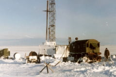
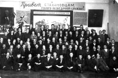
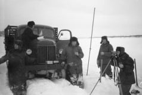
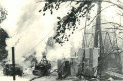

История ФГБУ «Гидроспецгеология»
ФГБУ «Гидроспецгеология» — многопрофильное геологическое предприятие, участвующее в обеспечении национальной безопасности и решении задач, направленных на развитие минерально-сырьевой базы России.
Предприятие образовано на основании постановления Совета Труда и Обороны от 03.09.1933 № 773/108сс и приказа Наркомата тяжелой промышленности от 23.12.1933 № 875. Главными задачами Предприятия являлись организация и проведение специальных геологических работ для обеспечения командования Красной Армии военной геолого-географической информацией по территориям возможного ведения боевых действий.
В период 1941-1945 гг. Предприятием при штабах инженерных войск фронтов были созданы военно-геологические отряды (ВГО), которые в боевой обстановке решали задачи оценки проходимости местности, условий водоснабжения войск, условий преодоления водных преград, наличия месторождений строительных материалов и т.д.
За более чем 80 лет Предприятие пережило семь переименований и одно слияние, сохранив и расширив сферу своих интересов в производственной и научной деятельности.
Предприятие принимало непосредственное участие в реализации Первого Атомного проекта, инженерно-геологическом обеспечении деятельности объектов Минсредмаша, Минобороны, подземных испытаний ядерного оружия (полигон Семипалатинск, Архипелаг Новая Земля, Байконур, Плесецк).
В настоящее время ФГБУ «Гидроспецгеология» является одним из основных ведущих предприятий геологоразведочной отрасли.
За более 80 лет предприятие пережило семь переименований и одно слияние, сохранив и расширив сферу своих интересов в производственной и научной деятельности:
-
Федеральное государственное бюджетное учреждение «Гидроспецгеология» (ФГБУ «Гидроспецгеология»)
2016г. -
Федеральное государственное унитарное геологическое предприятие «Гидроспецгеология» (ФГУГП «Гидроспецгеология»)
1991г. -
Производственное геологическое объединение «Гидроспецгеология» (ПГО «Гидроспецгеология»)
1979г. -
Четвертое и Пятое геологические управления (4 ГУ, 5 ГУ)
1962г. -
Всесоюзный гидрогеологический трест (ВГТ)
1951г. -
Четвертое и Пятое геологические управления (4 ГУ, 5 ГУ)
1947г. -
Государственный трест специального геологического картирования «Спецгео» (Трест «Спецгео»)
1939г. -
Всесоюзная контора специального геологического картирования «Спецгео» (ВКСГК «Спецгео»)
1933г.
- 
- 
- 
- 